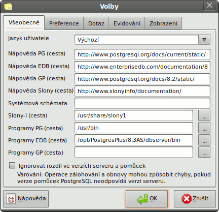

Volby pgAdmin - Karta 1 (Všeobecné)

- Jazyk uživatele - Můžete si změnit, který jazyk se má použít pro uživatelské rozhraní pgAdmin.
- Nápověda PG (cesta) - Zde se zadává cesta k souborům s nápovědou k PostgreSQL. Může to být URL nebo složka, která obsahuje
soubory s nápovědou ve formátu HTML (upozorňujeme, že některé prohlížeče mohou vyžadovat formu file://cesta/k/místním/souborům,
zatímco jiné /cesta/k/místním/souborům) nebo soubor ve formátu kompilované nápovědy (.chm) (ve Windows), soubor HTML Help project (.hpp),
archiv Zip obsahující soubory HTML a soubor HTML Help project. Nápověda k PostgreSQL se vyvolává z menu „Nápověda“ a při práci s
databázovými objekty na serveru PostgreSQL.
- Nápověda EDB (cesta) - Zde se zadává cesta k souborům s nápovědou k EnterpriseDB a platí pro ni stejná pravidla, jako
pro nápovědu k PostgreSQL. Nápověda k EnterpriseDB se vyvolává z menu „Nápověda“ a při práci s databázovými objekty na serveru
EnterpriseDB.
- Nápověda GP (cesta) - Zde se zadává cesta k souborům s nápovědou ke Greenplum a platí pro ni stejná pravidla, jako
pro nápovědu k PostgreSQL. Nápověda ke Greenplum se vyvolává z menu „Nápověda“ a při práci s databázovými objekty na serveru
Greenplum.
- Nápověda Slony (cesta) - Zde se zadává cesta k souborům s nápovědou k Slony a platí pro ni stejná pravidla, jako
pro nápovědu k PostgreSQL. Nápověda k Slony se vyvolává z menu „Nápověda“.
- Systémová schémata - Můžete zakázat zobrazení doplňujících schémat, tím že je zde uvedete. Zadávají se jako
seznam řetězců oddělených čárkami.
- Slony-I (cesta) - Aby mohl pgAdmin vytvořit úplně nový replikační cluster Slony-I, musí znát cestu k instalační
složce se skripty Slony-I. Pokud správný skript nenajde, budete se moci pouze napojit ke stávajícímu clusteru.
- Programy PG (cesta) - Zde byste měli nastavit cestu ke standardním pomůckám PostgreSQL pg_dump, pg_restore a pg_dumpall.
pgAdmin je používá k zálohování a obnově databází PostgreSQL. Pokud není tato cesta nastavená, pokusí se pgAdmin tyto pomůcky najít
ve složce, kde je nainstalovaný, ve složce nastavené lokální instalací PostgreSQL (ve Windows) a v prohledávaných složkách.
- Programy EDB (cesta) - Zde byste měli nastavit cestu k pomůckám EnterpriseDB pg_dump, pg_restore a pg_dumpall.
pgAdmin je používá k zálohování a obnově databází EnterpriseDB. Pokud není tato cesta nastavená, pokusí se pgAdmin tyto pomůcky najít
na standardních místech používaných EnterpriseDB.
- Programy GP (cesta) - Zde byste měli nastavit cestu k pomůckám Greenplum pg_dump, pg_restore a pg_dumpall.
pgAdmin je používá k zálohování a obnově databází Greenplum. Pokud není tato cesta nastavená, pokusí se pgAdmin tyto pomůcky najít
na standardních místech používaných Greenplum.
- Ignorovat rozdíl ve verzích serveru a pomůcek - Pokud je volba zapnutá, předává pgAdmin volbu „-i“ pomůckám jako je
pg_dump. Ta říká, že pomůcka z jedné verze databáze se může použít pro jinou verzi. Tato volba by se měla používat obezřetně,
protože může způsobit chyby během zálohování a obnovy.